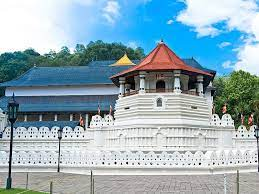

Home
History
Gallery
About

DALADA MALIGAWA
The Dalada Maligawa, also known as, the Temple of the Tooth, is one of the landmark sites in the city of Kandy. It is located in the heart of Kandy town surrounded by the lake and the commercial district. The Maligawa was once the royal palace inhabited by the king and his consorts, but after the demise of the Kandyan Kingdom the palace was transformed into a Buddhist temple that holds Buddha’s tooth.
It is a must visit location for all tourists. Visitors can catch a glimpse of Buddhist rituals, explore the museum that includes several ancient artifacts, and pay your tribute to the tooth relic at one of the Buddhist ceremonies held at the premises. The architectural splendor and the historical importance of the Dalada Maligawa are sure to amaze you. Points of interest are: the Aluth Maligawa, Audience Hall and the World Buddhism Museum.
Before preparing your visit keep in mind that the Maligawa is a Buddhist shrine and you will need to wear attire that covers your shoulders and legs.
>
The royal palace is situated to the north of the temple.[10] John Pybus, who was on an embassy in 1762, gives a detailed description of the royal palace.[11] Vikramabahu III of Gampola (r. 1356-1374) and Sena Sammatha Wickramabahu of Kandy (r. 1469-1511) built royal palaces on this site. Vimaladharmasuriya I of Kandy undertook various decorations to the palace. The Dutch orientalist Philippus Baldaeus visited the palace with General Gerard Pietersz Hulft in 1656. The royal residence was known as "Maha Wasala" in Sinhalese starting in the Polonnaruwa period. The royal palace is also known as "Maligawa"[b] (Palace). There were three Wahalkadas and an 8 feet (2.4 m) high wall used as main entrances. The section of the palace facing the Natha Devale is said to be the oldest. During the beginning of the British period, it was used by the government agent Sir John D'Oyly, 1st Baronet, of Kandy.[10] Successors of D'Oyly have continued to use it as their official residence. Today it is preserved as an archaeological museum. Ulpen Ge and Queens Palace are the associated buildings of the palace.>
The first “Dalada Madura” in Kandy, which housed the Sacred Tooth Relic was built by King Wimaladharmasuriya the first during his reign from year 1592 – 1604. History reveals that this was destroyed by the Portuguese during their invasions. The second temple was built in the same location by King Rajasinghe the Second during his reign from 1635 – 1687, which was burnt by the Dutch. The Dalada history says in year 1687 King Wimaladharmasuriya the Second built a 3 storeyed Dalada Madura and performed Dalada rituals with great devotion but with time the building was decayed and destroyed. Later his son King Sri Veera Parakrama Narendrasinghe who reigned from 1707 – 1739 built the 2 storeyed Dalada Madura which one can see today. The South Indian Kings who ruled the country from Senkadagala renovated and protected the shrine which was built by King Narendrasinghe.
The temple was finely renovated and beautified by King Keerthi Sri Rajasinghe to its present appearance. Paththirippuwa or the Octagonal Pavilion was constructed by King Sri Wickrama Rajasinghe who reigned from year 1798 – 1815.
>
 The Malwatta and Asgiriya monastic establishments have been closely associated with the sacred Tooth Relic to the extent that the Mahanayakes of the two monasteries, together with the DiyawadanaNilame, play the role of the three custodians of the sacred Tooth Relic. All religious rituals throughout the year, expositions of the sacred Tooth Relic and other matters relating to the sacred Tooth Relic are executed under the jurisdiction and the blessings of the two Mahanayakes. The two Mahanayakes today play the role of guardians of the State of Sri Lanka in that the Heads of States seek their blessings in the practice of State policies. The two monastic establishments seem to have been following the age-old monkish avocations – gamavasi (City dwellers) and vanavasi (Forest dwellers). Of these, MalvatuMaha Vihara comes closer to gamavasi sect with more closer association with the ruling houses, while AsgiriMaha Vihara traces its origin from the vanavasi sect of the well knownDimbulagala forest monastery of Polonnaruva. Over the years, the two monasteries have grown in stature and significance and both play equal roles in the reiligions activities of the Sri Dalada Maligawa.>
The Malwatta and Asgiriya monastic establishments have been closely associated with the sacred Tooth Relic to the extent that the Mahanayakes of the two monasteries, together with the DiyawadanaNilame, play the role of the three custodians of the sacred Tooth Relic. All religious rituals throughout the year, expositions of the sacred Tooth Relic and other matters relating to the sacred Tooth Relic are executed under the jurisdiction and the blessings of the two Mahanayakes. The two Mahanayakes today play the role of guardians of the State of Sri Lanka in that the Heads of States seek their blessings in the practice of State policies. The two monastic establishments seem to have been following the age-old monkish avocations – gamavasi (City dwellers) and vanavasi (Forest dwellers). Of these, MalvatuMaha Vihara comes closer to gamavasi sect with more closer association with the ruling houses, while AsgiriMaha Vihara traces its origin from the vanavasi sect of the well knownDimbulagala forest monastery of Polonnaruva. Over the years, the two monasteries have grown in stature and significance and both play equal roles in the reiligions activities of the Sri Dalada Maligawa.>